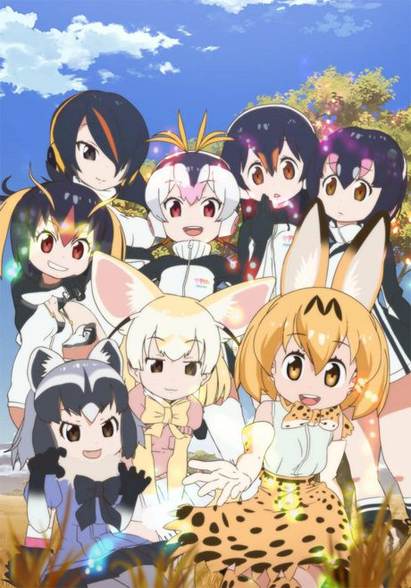

AnimeKemono Friends
けものフレンズ
An original anime, so there's no book to continue with.
7.2AniList
—Animeter
24 ep2 seasons
2 seasons, 24 episodes
In airing order. Episode numbers on this site count straight through every season, so season 2 starts at episode 13.
1
2017 · TV
Kemono Friends
Episodes1–1212 ep
2
2019 · TV
Kemono Friends 2
Episodes13–2412 ep
Sources: AniList